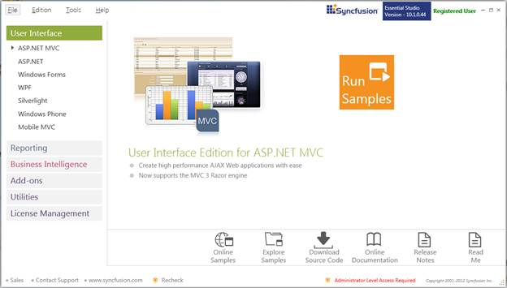
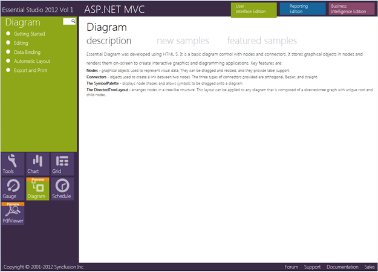

This section covers the location of the installed samples and describes the procedure to run the samples through the sample browser and online. It also provides the location of the source code.
Sample Installation Location
The Essential Diagram MVC samples are installed in the following location on your local disk drive:
<Install Location>\Syncfusion\EssentialStudio\<Version Number>\MVC\Diagram.MVC\Samples\3.5
Viewing Samples
To view the samples, follow the steps given below:
1. Click Start > All Programs > Syncfusion > Essential Studio <version number> > Dashboard. The Syncfusion Essential Studio Dashboard <version number> window is displayed.

Figure 3: Syncfusion Essential Studio Dashboard
2. In the Dashboard window, click Run Samples for ASP.NET MVC in the User Interface Edition panel. The ASP.NET MVC Sample Browser window is displayed.

Figure 4: MVC Edition Sample Browser
3. Essential Tools samples are displayed by default. Click the Diagram object in the fish-eye panel provided at the bottom of the window. The Essential Diagram samples are displayed.

Figure 5: Essential Diagram MVC Sample
4. Select any sample given in the Featured Samples section and browse through the features.
Source Code Location
The default location of the Essential Diagram for MVC source code is:
[System Drive]:\Program Files\Syncfusion\Essential Studio\<Version Number>\MVC\Diagram.Mvc\Src